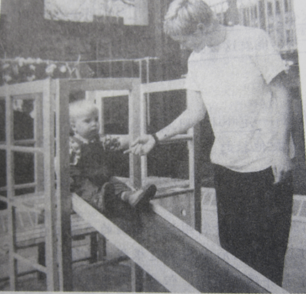
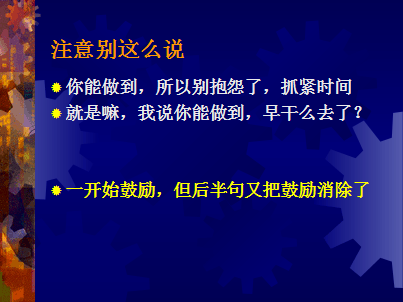
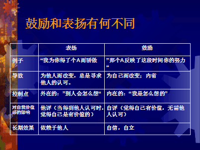

我们怎么样具体给孩子鼓励。我们说不要表扬但要鼓励。

比如孩子在学小号，你可以说，你今天吹得曲子比前几天的好听了。当他表现不好的时候，你可以说，你刚才在吹得时候有一段忘了曲谱，但是后来你又想起来了，人有时候紧张就会这样。学会克服紧张思考，这是你学会的一种新能力。大家注意，都是先接纳，接纳孩子现在努力中可能遇到的一些困难，不足，挫折。但是这并不意味说，你对孩子没要求，你可以在接纳他之后更好的去要求他通过努力去超越自己的表现。
我们来看一下家长容易犯的一个错误。如图

我们很多家长会无意识的想证明自己是对的。我们平时跟孩子的沟通都是为了促进孩子的成长，而不是证明自己正确。
我们来看一下鼓励和赞扬有什么不同呢？ 如下图

像那些艺术家也是，他们如果看中他评，也不能成名。
引用一下我导师她女儿的小例子，我的导师在陪养她女儿的时侯，每逢她女儿考试成绩好的时侯，都是她女儿请她父母吃饭庆祝一下的，我导师解释因为最开心的人是她的女儿，而不是我们，我们只是为你高兴的.大家要认清谁是主体，在这事中，孩子就是主体，不论成功或是失败时，我们都要明确主体。
在现在一些较富裕的家庭里，他们的孩子普遍都会觉得他们是在为父母在读书，为甚么会出现这种情况呢?因为这些父母都会对孩子说道:”你成绩考得好，真是我们的骄傲;你考不好，真让我们掉脸.”所以孩子当然会这么想.
但我导师则是让女儿知道，读书是为了自己的，你考得好，开心的骄傲的是自己，我们只会替你高兴;考不好，不开心难过的还是自己，我们只会替你难过，看看可否给你帮助.在这里主体是很重要的.平时在和孩子沟通时，如果孩子说他总是做不好，总是就是一种僵固的思维模式，我们可以跟他说到目前为止你还不擅长。
语言会对我们产生重大的暗示作用，所以家长们要留意一下孩子们语言的改变.可以给自己更多积极的暗示。更高层次的鼓励是什么呢，比如我们不会英语，或许我们可以让孩子作为我们的英语老师，孩子都会喜欢享受这种有能力的感觉.
我再举一个例子，一位患癌症的青少年要化疗，化疗是非常痛苦的，而且还会掉头发，这会让孩子产生一种无力的感觉，之前说过，要让孩子发自内心愿意去做一件事，必需要满足他的归属感，自主感和胜任感.在这情况下，医务人员设置了一个游戏，展示了一个会利用吸收的化学药品来杀毒的机械人ROXXI，大部分的青少年在玩过这游戏后，都会愿意继续化疗，不会中途放弃.因为青少年会觉得有力量自己主动去去接收化学药品对癌细胞进行进攻，这是一种高级一点的鼓励，化被动为主动。